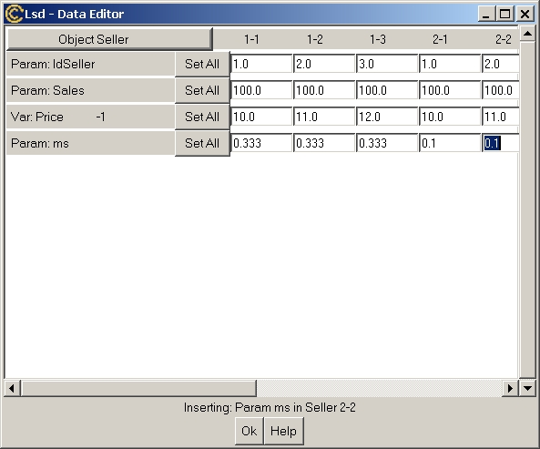
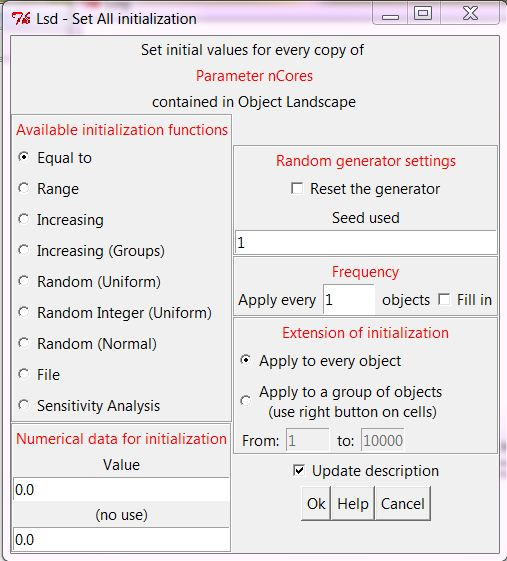

This entry allows to determine the initial values to be used during
the initial time step of the simulation. These values are inserted for
a single Object type, and for all its instances. To set the initial
number
of instance of Objects see Object Number
in
menu
Data(or click on the label of the Object in the above window in the
upper left corner).
The data required to be initalized are the Parameters and the Variables
used with lagged values (to be used in the early time steps of the
simulation),
therefore Variables used with no lags do not appear in the initial data
window. Users can set only the initial values for Parameters and lagged
Variables concerning the Object type shown in the Browser when this
menu
entry is invoked (see the Browser help page
to move through the model). Variables that are used with one, two, or
more
lagged values will appear once for each lag, because it is necessary to
have initial values for each of the lags.
The window is formatted as a spreadsheet: each line refers to one type of initial value (Parameter or one Variable lag) and each column refers to one instance of the Object containing that element. For example, in the window above it is highlighted the initial value for Parameter ms contained in an Object of type Seller. The exact Object instance to which the Parameters and Variables refer to is indicated with an automatic code (2-2 in the example) referred to on the columns' headers. In the following it is indicated how to identify the Object instance to which each cell refers to and the different ways to insert data.

- Equal To: the
inserted
Value is assigned to every instance the element in the model;
- Range:
the data values used concern the Minimum and Maximum. The system counts
the number of elements to initialize, then assigns increasing values so
that the very first element is set to Minimum, the last one to Maximum,
and the intermediate values to equally increasing values. For example,
if the model contains 100 elements, Miminum=1 and Maximum=100, then the
sequence of elements will be set to: 1 2 3 4 ...
- Increasing: the
values
of the elements are set to increasing values beginning from Start and
adding Step to each element.
For example, if Start=12 and Step=0.5, then the elements will be
initialized with the following values: 12 12.5 13 13.5 etc.
- Increasing (Groups):
the
same as Increasing, but the sequence of initial values is re-set to the
Start value when a group of continguous objects is finfished and
another group begins. For example, consider a model made of an Object
Market containing a set of objects Firm. Suppose the model contains
many Market's, and therefore many groups of objects Firm's.
Initializing a parameter in Firm with Increasing (Group), setting
Start=1 and Step=1, the initial values for the Firm's in the first
Market will be set to 1 2 3 etc. When the initialization function
reaches the first object Firm contained in the second Market, the
sequence begins with 1 2 3 again.
- Random (Uniform): a random value is assigned to element to initialize. The random numbers are drawn from a uniform distribution whose minimum value is the first value (Min) and the maximum is the second value (Max).
- Random Integer (Uniform): a random integer value is assigned to element t initialize. The random integer values are drawn from a uniform distribution whose minimum value is the first value (Min) and the maximum is the second value (Max).
- Random (Normal): a random integer value is assigned to element t initialize. The random values are drawn from a normal distribution whose mean is the first value (Mean) and the standard deviation is the second (Std Dev)
- File: insert data from a file. The file must be a text file formed by a single column containing an initial label. The label is ignored and the file must contain as many lines as instances of the Objects to be initialize.
These two entries allow users to insert the parameters for the
initialization function chosen, The labels of the entries vary
depending on the function chosen.
The initialization functions are applied to the sequence of elements
as they appear in the model. By default the function is used for every
element encountered. The user can also choose to apply the function
skipping a specified number of objects. For example, if one sets to
apply the function every 2 objects, then the function will set the
first element, skip the second, set the third an so on. In case of the
box for "Fill in" is checked, the "Increasing" initialization function
will fill also the intermediate elements with the latest values. For
example, suppose to initialize an element with the "Increasing"
initialization function, setting Start = 1 and Step=1. If you have the
frequency every 2 objects and Fill in not checked, then you will get
the series 1 0 2 0 3 0 4 0 etc. (supposing the element was set to 0 for
all objects). If, with the same function and setting, you put Fill in
checked, then you will get the series 1 1 2 2 3 3 4 4 etc.
This option checked on causes the system to add a verbal description
of the initialization to the description of the element. This
description will appear in the description of the element in the
browser and in the model report.